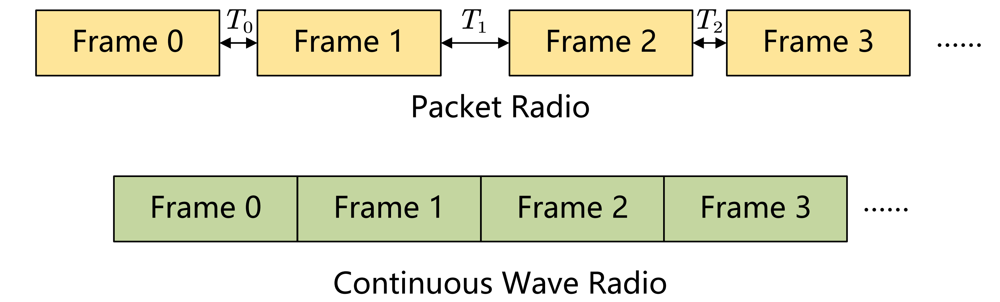
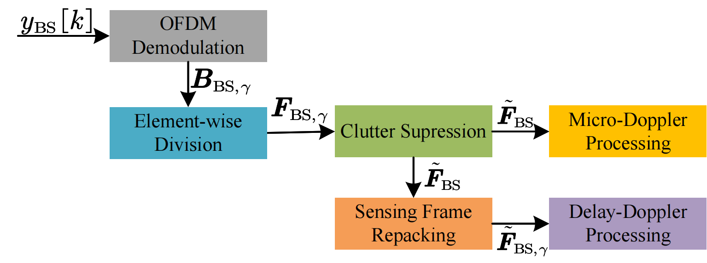

Signal Model
The BS-UE channel is modeled as:
$$ {h}_{\mathrm{UE}}\left( t,\tau \right) =\sum_{l=1}^L{\alpha _l\delta \left( \tau -\tau _l-\tau _d \right) e^{j2\pi \left( f_{D,l}+\Delta f_c \right) t}} $$where \(L\) is the number of multi-path components, \(\tau_d\) is the timing offset, and \(\Delta f_c\) is the carrier-frequency offset.
The monostatic sensing channel is:
$$ {h}_{\mathrm{BS}}\left( t,\tau \right) =\sum_{p=1}^P{\beta _{p}\delta \left( \tau -\tau _{s,p} \right) e^{j2\pi f_{D,s,p} t}} $$Continuous Wave vs. Packet Radio
OpenISAC adopts a continuous-wave transmission scheme to enable more accurate and flexible Doppler sensing, avoiding the jitter and irregular intervals of packet-based systems (like Wi-Fi).
Fig. 4. Comparison between packet radio and continuous wave radio.
Monostatic Sensing
Fig. 5. Signal processing procedure for monostatic sensing.
The processing pipeline includes:
- OFDM Demodulation & Element-wise Division: Removes the influence of transmitted data symbols to obtain the TF channel matrices. $$ \left( \boldsymbol{F}_{\mathrm{BS},\gamma} \right) _{n,m}=\frac{\left( \boldsymbol{B}_{\mathrm{BS},\gamma} \right) _{n,m}}{b_{n,m,\gamma}} $$
- Clutter Suppression: Applies an improved Moving Target Indication (MTI) procedure (IIR High-pass filter) to suppress static clutter. $$ ( \tilde{\boldsymbol{F}}_{\mathrm{BS}} )_{n,m} = \frac{1}{a_0} \left( \sum_{i=0}^{I} b_i ( \grave{\boldsymbol{F}}_{\mathrm{BS}} )_{n,m-i} - \sum_{j=1}^{J} a_j ( \tilde{\boldsymbol{F}}_{\mathrm{BS}} )_{n,m-j} \right) $$
- Delay-Doppler Processing: Computes the periodogram to estimate target range and velocity. $$ \left(\mathrm{Per}_{\gamma}\right)_{k_{\tau},k_{f}} =\frac{1}{N M_s} \left| \sum_{m=0}^{M_s-1}\sum_{n=0}^{N-1} (\tilde{\boldsymbol{F}}_{\mathrm{BS},\gamma})_{n,m}\, w[n,m]\, e^{j2\pi \frac{n k_{\tau}}{N_{\mathrm{Per}}}} e^{-j2\pi \frac{m k_{f}}{M_{\mathrm{Per}}}} \right|^2 $$
- Micro-Doppler Processing:
After clutter suppression, micro-Doppler analysis operates directly on the slow-time stream per range bin. First, form the delay-time matrix via an IFFT:
$$ \left(\boldsymbol{R}_{\mathrm{BS}}\right)_{k_{\tau},m} =\frac{1}{N}\sum_{n=0}^{N-1} \left(\tilde{\boldsymbol{F}}_{\mathrm{BS}}\right)_{n,m}\,e^{\,j2\pi \frac{n k_{\tau}}{N}} $$Then, select a working range bin \(k_{\tau}^\star\) and compute the Short-Time Fourier Transform (STFT):
$$ \left(\boldsymbol{G}\right)_{m,k_f} =\sum_{\ell=0}^{M_w-1} r_{\mathrm{BS}}\!\left[mM_H+\ell\right]\; w_\mathrm{md}[\ell]\; e^{-j2\pi \frac{k_f\,\ell}{M_{\mathrm{md}}}} $$The spectrogram is then calculated as:
$$ \left( \mathrm{SPT} \right) _{m,k_f}=\frac{1}{M_w}\left| \left( \boldsymbol{G} \right) _{m,k_f} \right|^2 $$
UE Communication Reception

Fig. 6. Block diagram of UE communication reception.
The UE operates in two states:
SYNC_SEARCH State
The UE operates in a block-by-block fashion. In each iteration, it fetches a block of samples and performs the following:
- Frame Detection & Timing Estimation: Performs a sliding correlation with the known Zadoff–Chu (ZC) synchronization symbol \(s_{\mathrm{ZC}}[k]\): $$ r[k]=\sum_{i=0}^{N_s-1}{y_{\mathrm{UE},\mathrm{sync}}\left[ k+i \right] s_{\mathrm{ZC}}^{*}\left[ i \right]} $$ A peak in the normalized correlation energy \(r_N[k]\) indicates the frame boundary and initial timing offset \(\hat{k}_{\mathrm{TO}}\): $$ r_N[k]=\frac{|r[k]|^2}{\sum_{n=0}^{N_{\mathrm{corr}}}|r[k]|^2} $$
- Coarse Frequency Offset Estimation: Uses CP-tail correlations across multiple symbols to estimate the fractional frequency offset \(\hat{f}_o\): $$ \hat{f}_o=\frac{\mathrm{arg}\!\bigl( r_{\mathrm{CP}} \bigr)}{2\pi T} $$
- Correction: The estimated offsets are corrected via digital frequency retuning or OCXO adjustment, and sample alignment (padding/discarding).
NORMAL State
Once synchronized, the UE transitions to the NORMAL state to process frames:
- OFDM Demodulation: Removes CPs and performs FFT to obtain frequency-domain symbols: $$ \left( \boldsymbol{B}_{\mathrm{UE},\gamma} \right)_{n,m} = b_{n,m,\gamma} \left( \boldsymbol{H}_{\mathrm{UE},\gamma} \right)_{n,m} + \left( \boldsymbol{Z}_{\mathrm{UE},\gamma} \right)_{n,m} $$
- Channel Estimation: Uses the ZC symbol to estimate the channel response: $$ (\hat{\boldsymbol{H}}_{\mathrm{UE},\gamma})_{n,m_{\mathrm{sync}}}=\frac{\left( \boldsymbol{B}_{\mathrm{UE},\gamma} \right) _{n,m_{\mathrm{sync}}}}{z_n} $$ The full-frame channel estimates are obtained by propagating the estimate at the synchronization symbol \(m_{\mathrm{sync}}\): $$ (\hat{\boldsymbol{H}}_{\mathrm{UE},\gamma})_{n,m}=(\hat{\boldsymbol{H}}_{\mathrm{UE},\gamma})_{n,m_{\mathrm{sync}}}\exp \bigl( j2\pi ( m-m_{\mathrm{sync}} )( \hat{f}_{o,\gamma}T_O-n\Delta fN_s\Delta \hat{T}_{s,\gamma} ) \bigr) $$
- CFO/SFO Tracking: Pilots are used to track residual carrier frequency offset (CFO) and sampling frequency offset (SFO) via Weighted Linear Regression (WLS) on pilot phase errors: $$ \hat{\boldsymbol{\theta}}_\gamma = \big( \boldsymbol{A}_\gamma^{{T}} \boldsymbol{W}_\gamma \boldsymbol{A}_\gamma \big)^{-1} \boldsymbol{A}_\gamma^{{T}} \boldsymbol{W}_\gamma \boldsymbol{\varphi}_{{UE},\gamma} $$
- Equalization & Decoding: Performs channel equalization via one-tap frequency-domain equalization: $$ \hat{b}_{n,m,\gamma}=\frac{\left( \boldsymbol{B}_{\mathrm{UE},\gamma} \right) _{n,m}}{(\hat{\boldsymbol{H}}_{\mathrm{UE},\gamma})_{n,m}} $$ Then, LLRs are computed, descrambled, and LDPC-decoded to recover the payload.
UE Bistatic Sensing
Signal processing for bistatic sensing involves reconstructing unknown modulation symbols and performing Over-the-Air (OTA) synchronization.
Modulation Symbol Reconstruction
The reconstructed QPSK data symbol is obtained by making hard decisions on the equalized symbols \(\hat{b}_{n,m,\gamma}\):
$$ \tilde{b}_{n,m,\gamma} = \frac{1}{\sqrt{2}}\big( \operatorname{sgn}(\mathrm{Re}\{\hat{b}_{n,m,\gamma}\}) + j\operatorname{sgn}(\mathrm{Im}\{\hat{b}_{n,m,\gamma}\}) \big) $$OTA Synchronization
Bistatic sensing requires robust real-time synchronization without a wired link. OpenISAC implements a low-complexity over-the-air (OTA) synchronization scheme:
- Fractional Timing Estimation: Refines the timing offset using Quinn's algorithm to obtain a fractional estimate \(\hat{\delta}_{\tau}\) from the delay-domain peak. The overall timing offset is estimated as: $$ \hat{\tau}_{o,\gamma} = \frac{\hat{\delta}_{\tau}+k_{\max ,\gamma}}{f_s} $$
- SIO Tracking: Estimates the Sampling Interval Offset (SIO) \(\epsilon_{\mathrm{SIO},w}\) by performing linear regression on the timing corrections over a window of \(\Gamma_W\) frames: $$ \tilde{k}_{\tau,\gamma_w+\ell} \approx \epsilon_{\mathrm{SIO},w}\,\ell + \hat{k}_{\tau,\gamma_w} $$
- Recursive Update: Maintains a smooth estimate of the cumulative sensing timing offset \(\hat{k}^{\mathrm{sens}}_{\tau,\gamma}\) to avoid jitter: $$ \hat{k}^{\mathrm{sens}}_{\tau,\gamma} = \hat{k}^{\mathrm{sens}}_{\tau,\gamma-1} + \hat{\epsilon}_{\mathrm{SIO},w-1} - \hat{k}_{\mathrm{TO},\gamma-1} + \mu_\gamma e_\gamma $$ where \(\mu_\gamma e_\gamma\) is a feedback correction term based on the tracking error.
- Channel Compensation: The estimated timing offset and SIO are applied to the bistatic channel matrix to compensate for synchronization errors: $$ \left( \tilde{\boldsymbol{F}}_{\mathrm{UE},\gamma} \right) _{n,m} = \left( \boldsymbol{F}_{\mathrm{UE},\gamma} \right) _{n,m} e^{j2\pi n\Delta f\left( \hat{k}_{\tau ,\gamma}^{\mathrm{sens}}+mN_s\Delta \hat{T}_{as,w-1} \right)} $$